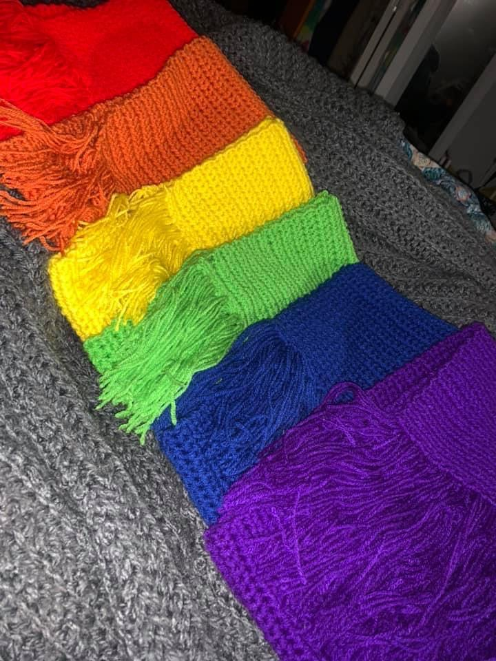

Since the third grade crochet has been one of my favorite outlets to spend my time using my hands and challenging my patience with. I'm actively learning different styles and stitches to create more beatiful work over time. Though I've been crocheting for nearly twelve years I'd still consider myself an intermediate crocheter because I'm constantly learning new things while still returning to the basics to improve on what I've already learned. My tools that I use the most outside of the crochet hooks and yarn also include many great videos on websites like Youtube that allow me to have access to free videos and patterns, using Youtube videos as a tool also allows me to find out what problems other people may have ran into when learning patterns through the comment section and by being able to actually see what's being done. Pinterest is one of my favorite websites aside from Youtube because it also gives me access to patterns for crochet but it also gives me acess to thousands of photos to gain inspiraiton for my own designs.
